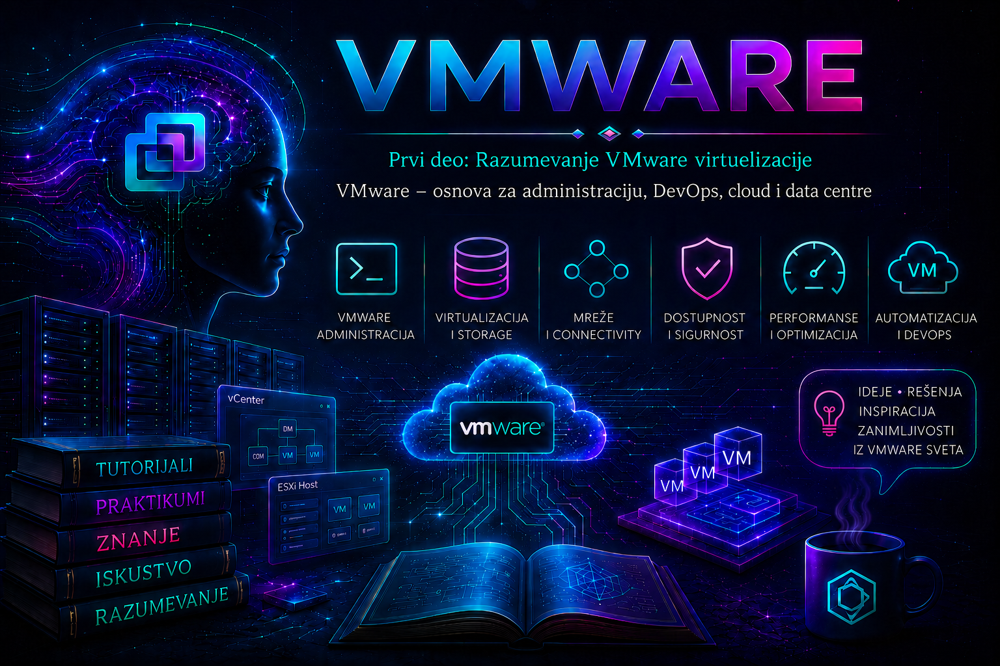

VMware

U savremenoj informacionoj infrastrukturi Linux i Windows administracija, mreže, storage, bezbednost, DevOps, cloud, Kubernetes, monitoring, backup i oporavak nisu odvojeni svetovi. Svaka aplikacija izvršava se na operativnom sistemu ili u kontejneru; svaki operativni sistem i svaki Kubernetes čvor troše procesor, memoriju, mrežni i diskovni kapacitet; svaki od tih resursa zavisi od fizičke infrastrukture, upravljačkih servisa i procedura koje obezbeđuju dostupnost, zaštitu i oporavak. VMware vSphere je dragocen model za učenje upravo zato što te slojeve čini vidljivim i povezuje ih u sistem kojim administrator može planski da upravlja.
Učiti VMware zato ne znači samo naučiti kako se kreira virtuelna mašina. Znači razumeti kako se fizički server pretvara u ESXi ili, u aktuelnoj generaciji proizvoda, ESX host; kako vCenter obezbeđuje centralno upravljanje; kako klaster raspoređuje kapacitet i reaguje na kvar; kako virtuelna mrežna kartica dolazi do fizičkog sviča; kako virtuelni disk koristi datastore i stvarni storage; kako se promene evidentiraju, mere i vraćaju; i zašto tehnički moguća operacija nije uvek bezbedna produkciona odluka.
Ova lekcija je mapa puta. Ona povezuje prethodno predstavljanje VMware platforme sa narednim lekcijama o virtuelizaciji, hipervizorima, ESXi/ESX hostovima, vCenter-u, mrežama, storage-u, klasterima, dostupnosti, automatizaciji i troubleshooting-u. Njena svrha nije da unapred iscrpi te teme, već da objasni zašto su važne, kako se međusobno oslanjaju i kakav način razmišljanja budući administrator treba da razvije.
VMware kao model enterprise infrastrukture
Virtuelna mašina istovremeno ima dva pogleda. Iz gostujućeg operativnog sistema ona izgleda kao računar sa procesorima, memorijom, diskovima, mrežnim interfejsima, procesima, servisima, korisnicima i logovima. Iz vSphere okruženja ona je upravljani objekat sa dodeljenim vCPU i memorijskim resursima, virtuelnim diskovima, mrežnim adapterima, datastore lokacijom, događajima, alarmima, privilegijama i odnosom prema hostu i klasteru. Pouzdana administracija nastaje tek kada se ta dva pogleda povežu.
| Sloj | Tipični objekti i podaci | Administratorsko pitanje | Posledica pogrešne procene |
|---|---|---|---|
| Aplikacija i usluga | Procesi, servisi, transakcije, SLI/SLO, zavisnosti | Da li korisnička funkcija zaista radi? | „Uključena VM” može se pogrešno proglasiti zdravom uslugom. |
| Gostujući OS | CPU, RAM, fajl-sistemi, drajveri, IP konfiguracija, sistemski logovi | Da li je uzrok unutar operativnog sistema? | Nepotrebna promena infrastrukture ili propušten kvar servisa. |
| Virtuelna mašina | vCPU, memorija, VMDK, vNIC, VMware Tools, snapshot-i | Da li je konfiguracija odgovarajuća i podržana? | CPU scheduling problem, memorijski pritisak, rast snapshot-a ili prekid mreže. |
| vSphere infrastruktura | Host, vCenter, klaster, Port Group, datastore, HA, DRS, vMotion | Koje zajedničke zavisnosti utiču na radno opterećenje? | Incident može zahvatiti više sistema, ne samo prijavljenu VM. |
| Fizički data centar | Serveri, NIC/HBA adapteri, svičevi, storage, napajanje, hlađenje | Postoji li redundantna i dovoljno kapacitirana putanja? | Jedna fizička tačka otkaza ugrožava mnogo virtuelnih sistema. |
Ovaj slojeviti model sprečava čestu grešku: zaključak da je problem „VMware problem” ili „aplikativni problem” pre nego što su prikupljeni dokazi. Ako Linux server ne vidi novi prostor, najpre treba utvrditi da li je virtuelni disk dodat i vidljiv guest OS-u, zatim da li je uređaj pravilno particionisan ili uključen u LVM i na kraju da li je fajl-sistem proširen. Ako VM nema mrežu, proveravaju se guest konfiguracija, stanje vNIC-a, Port Group, VLAN, uplink i fizička mreža. Ako se VM ne uključuje, ispituju se događaji zadatka, raspoloživi resursi, pristup datastore-u, stanje hosta i eventualna zaključavanja fajlova. Širina pogleda ne zamenjuje stručnost pojedinačnih timova, ali omogućava precizniju dijagnostiku i bolju saradnju.
Osnova za Linux i Windows administraciju
U poslovnim okruženjima veliki broj Linux i Windows servera izvršava se kao virtuelne mašine. Sistem administrator zato mora da razume ne samo procese, servise, korisnike i fajl-sisteme, već i infrastrukturni kontekst u kome oni rade. Dodavanje diska počinje promenom virtuelnog hardvera, ali se završava bezbednom promenom unutar guest OS-a. Promena mrežnog adaptera obuhvata vrstu virtuelnog uređaja, Port Group i VLAN, ali može promeniti i naziv interfejsa, MAC-zavisna pravila ili mrežnu konfiguraciju unutar sistema.
Kloniranje takođe nije puko kopiranje fajlova. Novi server mora dobiti odgovarajući hostname, IP adresu, identitet sistema, sertifikate i ključeve kada je to potrebno; aplikacije, baze i direktorijumski servisi mogu imati sopstvene zahteve za podržanu replikaciju i oporavak. VMware Tools, odnosno podržani paket open-vm-tools u mnogim Linux distribucijama, povezuje gostujući sistem sa platformom, pruža drajvere i telemetriju i omogućava pojedine guest operacije. Njegovo prisustvo ipak nije dokaz da je aplikacija zdrava.
Posebnu opreznost zahtevaju snapshot i vraćanje starijeg stanja. Snapshot je kratkotrajni mehanizam za kontrolisanu promenu i nije zamena za backup. Vraćanje VM-a koja sadrži domen kontroler, distribuiranu bazu, transakcioni sistem ili vremenski osetljivu aplikaciju može narušiti konzistentnost čak i kada je operacija na nivou hipervizora tehnički uspešna. Pre takve promene proveravaju se podržani postupak proizvođača aplikacije, stanje backup-a, RPO/RTO zahtevi i plan oporavka.
Razumevanje resursa i performansi
Virtuelizacija uči administratora da razlikuje dodeljeni, rezervisani, ograničeni i stvarno korišćeni kapacitet. Spora VM ne dobija automatski više vCPU-a i memorije. Prevelik broj vCPU-a može povećati vreme čekanja na raspoređivanje, dok nekontrolisana ukupna dodela memorije može dovesti host pod pritisak. Thin provisioned disk štedi fizički prostor na početku, ali zahteva praćenje rasta; pun datastore može zaustaviti više virtuelnih mašina. Veliki virtuelni disk ne znači dobru diskovnu uslugu ako storage ima visoku latenciju ili ako veliki broj radnih opterećenja deli isto usko grlo.
Ispravan postupak počinje poslovnim simptomom i vremenskim okvirom, nastavlja se merenjem u guest OS-u i vSphere-u, a završava korelacijom sa hostom, datastore-om, mrežom i poslednjim promenama. Jedna trenutna vrednost retko je dovoljna: posmatraju se trend, vršna opterećenja, konkurentna radna opterećenja i bazna linija normalnog ponašanja. Tek tada se donosi odluka o rightsizing-u, migraciji, promeni storage politike, proširenju kapaciteta ili korekciji aplikacije.
Od administracije do DevOps-a i Infrastructure as Code pristupa
Git servisi, CI/CD izvršioci, registri kontejnerskih slika, sistemi za automatizaciju, monitoring i razvojna okruženja često rade na virtuelnoj infrastrukturi. DevOps inženjer koji razume vSphere ume da zahtev „potreban nam je server” pretvori u proverljiv opis: namena i vlasnik sistema, očekivano opterećenje, vCPU i memorija zasnovani na merenju, mrežni tokovi i bezbednosna pravila, početni i projektovani storage kapacitet, nivo dostupnosti, backup i retention, životni vek i kriterijum uklanjanja.
Grafički vSphere Client je važan za upoznavanje objekata i posledica operacija. Kada okruženje poraste, ponovljivost zahtevaju automatizacija i Infrastructure as Code. Aktuelni VCF PowerCLI, vSphere/VCF API i SDK alati, kao i integracije sa platformama poput Ansible-a i Terraform-a, omogućavaju inventarisanje, standardizovano kreiranje i kontrolisanu promenu infrastrukture. Međutim, automatizacija uvećava i dobru odluku i grešku: pogrešno izabrani opseg može promeniti stotine objekata. Zbog toga se postupak najpre razume i ručno validira u laboratoriji, zatim pretvara u idempotentan tok sa pregledom promene, najmanjim privilegijama, kontrolom greške i jasnim rollback-om.
Konfiguracija kao kod donosi više od brzine. Tekstualna definicija može biti verzionisana, pregledana, odobrena i ponovo upotrebljena; povezivanje sa pipeline-om obezbeđuje trag ko je, kada i zašto zatražio promenu. Ipak, stanje deklarisano u kodu nije cela istina o sistemu: aplikacioni podaci, identiteti, tajne, backup, mrežne zavisnosti i ručne promene van koda moraju imati sopstvene kontrole.
Temelj za cloud i Kubernetes
Cloud menja model potrošnje i upravljanja, ali ne ukida infrastrukturne zakonitosti. Instance, images, virtual networks, block storage, zone dostupnosti, load balancing i automatizovano provisioning ponašanje lakše se razumeju kada čitalac već poznaje VM, template, Port Group, datastore, klaster, migraciju i upravljački sloj. Privatni cloud primenjuje standardizovanu i automatizovanu isporuku resursa u infrastrukturi organizacije ili partnera; javni cloud pruža resurse provajdera kao uslugu; hibridni model povezuje različita okruženja. Migracija između njih zahteva analizu identiteta, mrežnih tokova, podataka, latencije, bezbednosti, podrške, operativnog modela i troška, a ne samo kopiranje virtuelnog diska.
Kubernetes i virtuelne mašine nisu suprotstavljeni izbori. Kontrolni i radni čvorovi klastera često rade kao VM-ovi, dok Kubernetes upravlja kontejnerskim radnim opterećenjima iznad njih. Incident zato može nastati u kontejneru, Kubernetes raspoređivanju, operativnom sistemu čvora, virtuelnom hardveru, hostu, mreži ili storage-u. Poznavanje granica odgovornosti sprečava nasumične intervencije: Kubernetes može ponovo rasporediti Pod, ali ne može ukloniti fizičku latenciju datastore-a; vSphere HA može ponovo pokrenuti VM posle pada hosta, ali ne potvrđuje da je aplikacija ponovo konzistentna i dostupna korisniku.
Mreže, storage i data centar
VMware mrežni model pokazuje celu putanju: virtuelni adapter VM-a povezuje se sa Port Group objektom na standardnom ili distribuiranom virtuelnom sviču, koji koristi fizičke uplink adaptere hosta i odgovarajuću konfiguraciju fizičkih svičeva. Management, vMotion i storage saobraćaj imaju različite namene, rizike i zahteve. Segmentacija, VLAN označavanje, redundantne putanje, MTU doslednost i kontrolisana pravila pristupa utiču istovremeno na bezbednost, dostupnost i performanse. Ispravna IP adresa u guest OS-u zato je samo jedna karika u putanji.
Storage model povezuje VMDK koji vidi platforma, blok uređaj i fajl-sistem koje vidi guest OS, datastore koji vidi host i stvarni storage sistem sa njegovim kontrolerima, diskovima, mrežnim ili Fibre Channel putanjama i politikama. Administrator prati slobodan prostor i latenciju, razume thin i thick provisioning, uticaj snapshot lanaca, zajedničko korišćenje kapaciteta i posledice gubitka putanje. Isto razmišljanje kasnije se prenosi na cloud block storage i Kubernetes persistent volume arhitekture.
Data centar je organizovan sociotehnički sistem: fizički serveri, napajanje, hlađenje, mreža, storage, fizička zaštita, monitoring, rezervne kopije, procedure i ljudi. Softverski upravljački sloj ne uklanja fizička ograničenja. Virtuelni svič koristi stvarne NIC adaptere, datastore stvarne storage putanje, a klaster stvarne hostove sa konačnim kapacitetom. Zbog toga održavanje, redundansa i planiranje kapaciteta moraju obuhvatiti oba nivoa.
Dostupnost, backup i oporavak nisu ista kontrola
| Mehanizam | Primarna namena | Ne rešava samostalno |
|---|---|---|
| vSphere HA | Ponovno pokretanje VM-ova posle pada hosta, u okviru podržane i pravilno kapacitirane klasterske arhitekture. | Kvar aplikacije, logičko oštećenje podataka ili potpuni gubitak lokacije. |
| vMotion | Planirano premeštanje aktivne VM između kompatibilnih hostova radi održavanja ili balansiranja. | Backup podataka ili oporavak već oštećene aplikacije. |
| Snapshot | Kratkotrajna kontrolna tačka za podržanu i vremenski ograničenu promenu. | Nezavisna, dugoročna i izolovana rezervna kopija. |
| Backup | Nezavisna kopija za oporavak sistema i podataka prema definisanim RPO/RTO zahtevima. | Kontinuitet rada bez testiranog restore-a, odgovarajuće infrastrukture i procedura. |
| Replikacija | Održavanje dodatne kopije na drugom sistemu ili lokaciji. | Zaštita od automatskog prenosa korupcije, brisanja ili ransomware promene bez dodatnih kontrola. |
Dizajn dostupnosti počinje poslovnim zahtevima: koliko podataka sme biti izgubljeno, koliko dugo usluga sme biti nedostupna, koje zavisnosti moraju biti oporavljene i ko potvrđuje da je usluga funkcionalna. Redundantni hostovi ne pomažu ako svi zavise od jedne mrežne ili storage tačke otkaza; backup ne ispunjava svrhu ako nije čitljiv, izolovan i testiran. VMware je zato dobra škola za razlikovanje dostupnosti infrastrukture, kontinuiteta aplikacije i dokazivog oporavka.
Bezbednost i profesionalna odgovornost
Centralno upravljanje virtuelnom infrastrukturom predstavlja koncentrisanu privilegiju. Kompromitovan administratorski nalog može uticati na mnogo poslovnih sistema, pa su najmanje potrebne privilegije, razdvajanje dužnosti, višefaktorska autentikacija gde je podržana, zaštita management mreže, kontrola pristupa, ažuriranje, audit događaja i provera bezbednosne konfiguracije osnovne administratorske obaveze. Izolacija VM-ova ne zakrpljuje guest OS i aplikacije, a snapshot ne štiti od napada.
Jednostavan GUI ne čini operaciju bezazlenom. Pre produkcione promene administrator definiše cilj i obim, proverava kompatibilnost i zavisnosti, procenjuje uticaj na dostupnost, bezbednost, performanse i oporavak, obezbeđuje odobrenje i komunikaciju, utvrđuje validaciju i rollback, a zatim dokumentuje stvarni rezultat. Ova disciplina je prenosiva na svaku infrastrukturnu platformu.
Monitoring, SRE i sistematičan troubleshooting
VMware okruženje pruža događaje, zadatke, alarme i metrike na nivou VM-a, hosta, klastera, mreže i datastore-a. To je dobra osnova za SRE način razmišljanja: tehničke metrike povezuju se sa korisničkom uslugom, trendovi sa planiranjem kapaciteta, a incident sa merljivim vremenom uticaja, oporavkom i trajnom preventivnom merom. Alarm nije cilj sam po sebi; mora biti pravovremen, operativno koristan i povezan sa postupkom reakcije.
- Definiši simptom, obim i posledicu: šta korisnik vidi, kada je počelo, koji sistemi i lokacije su zahvaćeni i šta još radi normalno.
- Sačuvaj dokaze: evidentiraj poslednje promene, zadatke, događaje, alarme, metrike i relevantne guest, vCenter i host logove u istom vremenskom periodu.
- Mapiraj zavisnosti: VM, host, klaster, Port Group, datastore, aplikacioni i spoljašnji servisi.
- Postavi proverljivu hipotezu: od najmanje invazivne read-only provere ka promeni stanja; ne menjaj više promenljivih odjednom.
- Razdvoji uzroke i mere: neposredni uzrok, osnovni uzrok, privremeno zaobilazno rešenje i trajna korektivna mera nisu isto.
- Validiraj i dokumentuj: potvrdi oporavak tehničkim metrikama i korisničkom funkcijom, nadgledaj stabilnost i zabeleži nalaz.
Na primer, aplikacija u kontejnerima može biti spora zato što Pod dostiže limit, Kubernetes čvor trpi memorijski pritisak, Linux VM čeka CPU raspoređivanje, datastore ima visoku latenciju ili mrežna putanja do baze gubi pakete. Provera samo jednog sloja i izjava „kod mene je sve u redu” ne rešavaju incident. Dobar administrator deli vreme događaja, opseg, merene vrednosti i rezultate provera, tako da specijalizovani timovi mogu da korelišu dokaze.
Aktuelne verzije, nazivi i licenciranje
VMware terminologiju treba čitati u verzijskom kontekstu. vSphere 8.x dokumentacija i veliki broj postojećih okruženja koriste naziv ESXi, dok aktuelna vSphere/VMware Cloud Foundation 9.x dokumentacija koristi naziv ESX. Koncept bare-metal hipervizora ostaje prenosiv, ali instalacioni zahtevi, podržani hardver, funkcionalnosti, kompatibilnost i operativni postupci moraju se proveriti za tačno izdanje i build. Isto važi za vCenter, add-on proizvode, guest operativne sisteme i interoperabilnost sa backup, mrežnim i storage rešenjima.
Licenciranje se takođe promenilo. Okruženja vSphere 8.x mogu koristiti modele i solution ključeve koji zavise od ugovora i izdanja, dok VCF/VVF 9.0 uvode subscription licencne datoteke i centralizovano upravljanje usklađenošću umesto tradicionalnih 25-znakovnih ključeva; stari ključevi nisu neposredno primenljivi na vCenter 9.0. Dostupnost funkcija kao što su vMotion, HA, DRS, distribuirani svičevi, vSAN, automatizacija i integracije zavisi od verzije, proizvoda, subscription prava i podržane topologije. Zbog toga se laboratorijski rezultat ne prenosi u produkcioni dizajn bez provere aktuelnog Product Lifecycle-a, Compatibility Guide-a, entitlement-a i zvanične dokumentacije.
Promene proizvoda i tržišta dodatno potvrđuju zašto ne treba učiti samo položaj dugmeta. Hipervizor, raspodela resursa, virtuelna mreža, storage putanja, klaster, kontrola pristupa, monitoring i oporavak ostaju vredni koncepti i kada se promene naziv, interfejs, licenca ili platforma. VMware znanje zato pruža prenosiv infrastrukturni temelj, ali ne zamenjuje posebno učenje Linuxa, Windowsa, mreža, storage-a, bezbednosti, cloud-a ili Kubernetes-a.
Profesionalni pravci i put učenja
| Pravac | Šta VMware znanje donosi | Šta treba dalje produbiti |
|---|---|---|
| Sistemska administracija | Kontekst u kome rade Linux i Windows serveri, resursi, diskovi, mreže i životni ciklus. | OS internals, identiteti, zakrpe, servisi, automatizacija i hardening. |
| Mreže i storage | Veza virtuelnih i fizičkih putanja, zajednički kapacitet, latencija i redundansa. | Protokoli, dizajn, performanse, multipathing, bezbednost i vendor platforme. |
| DevOps i IaC | Stvarna infrastrukturna meta za standardizaciju, API i automatizovano kreiranje. | Git, CI/CD, PowerShell/Python, Terraform/Ansible, testiranje i upravljanje tajnama. |
| Cloud i Kubernetes | Apstrakcija računarskih, mrežnih i storage resursa i razumevanje donjih slojeva klastera. | Cloud-native servisi, kontejneri, orkestracija, identiteti, troškovi i shared-responsibility model. |
| SRE, monitoring i incident response | Metrike, događaji, zavisnosti, kapacitet, alarmiranje i vežbanje kvarova. | SLI/SLO, observability, automatizacija reakcije, post-incident analiza i resilience engineering. |
| Bezbednost, backup i oporavak | Zaštita upravljačkog sloja, privilegije, VM-aware zaštita i slojeviti recovery. | Threat modeling, hardening, immutable kopije, aplikaciona konzistentnost i DR testiranje. |
Početnik napreduje od jedne VM i njenih resursa ka hostu, mreži i datastore-u, zatim ka vCenter inventaru, klasterima, migraciji, dostupnosti, monitoringu i automatizaciji. Iskusni stručnjak može istu putanju koristiti kao mapu za povezivanje postojeće specijalizacije sa slojevima koje slabije poznaje. Sertifikacioni program može pomoći da se ciljevi strukturiraju, ali sposobnost se dokazuje razumevanjem, laboratorijskim radom, čitanjem dokumentacije, bezbednom promenom i rešavanjem stvarnih problema.
Praktikum: od mape infrastrukture do prvog incidenta
Cilj i kontekst: vežba ne uvodi složenu konfiguraciju, već razvija četiri osnovne veštine: prepoznavanje slojeva, čitanje inventara bez promene stanja, obrazlaganje zahteva za novom VM i sistematičnu dijagnostiku. Može se raditi u legalno licenciranoj kućnoj laboratoriji, edukativnom okruženju ili na dokumentovanom primeru. Produkciono okruženje koristi se samo uz odobren read-only pristup i pravila organizacije.
Topologija: jedan vCenter, jedan klaster ili samostalni host, najmanje jedan host, jedan datastore, jedna Port Group i jedna test VM. Ako laboratorija nema vCenter, inventar se može opisati na osnovu Host Client-a; funkcije dostupne samo kroz vCenter označavaju se kao nedostupne, ne simuliraju se rizičnom improvizacijom.
Preduslovi i privilegije: nalog sa read-only privilegijama nad laboratorijskim inventarom; vSphere Client ili VCF PowerCLI na administratorskoj radnoj stanici; beleške za evidenciju; dozvola vlasnika okruženja. Ova vežba ne zahteva ESXi/ESX Shell, root pristup, snapshot, restart niti promenu mreže. Rizik je nizak dok se poštuje read-only opseg; podaci o imenima, IP adresama i topologiji tretiraju se kao poverljivi.
Vežba 1: nacrtaj zavisnosti jedne virtuelne mašine
- Izaberi isključivo test VM i zapiši njenu namenu, vlasnika, guest OS, stanje napajanja i status VMware Tools-a.
- Zabeleži dodeljeni vCPU, memoriju, virtuelne diskove i mrežne adaptere. Ne menjaj vrednosti.
- Pronađi host ili klaster na kome radi, datastore svakog diska i Port Group svakog adaptera.
- Za svaki objekat napiši fizičku ili servisnu zavisnost koju interfejs ne prikazuje potpuno: uplink i fizički svič, storage putanju, DNS/NTP/identitet, backup i monitoring.
- Odredi najmanje jednu tačku čiji bi kvar pogodio samo VM i jednu čiji bi kvar pogodio više VM-ova.
Očekivani rezultat i validacija: mapa mora omogućiti drugom administratoru da odgovori gde VM radi, gde su joj podaci, kojom mrežom komunicira, ko je odgovoran za aplikaciju i koji zajednički kvarovi mogu uticati na nju. Ako bilo koji podatak nije poznat, označava se kao dokumentacioni nedostatak; ne izmišlja se.
Vežba 2: prikupi read-only inventar kroz VCF PowerCLI
Sledeće komande izvršavaju se u PowerShell konzoli na administratorskoj radnoj stanici sa instaliranim modulom VCF.PowerCLI. Koristi se poseban laboratorijski read-only nalog. Connect-VIServer uspostavlja sesiju, a ostale prikazane komande čitaju inventar. Naziv servera i VM-a zamenjuju se vrednostima iz laboratorije. Kredencijale ne upisivati u skriptu niti istoriju komandi.
$server = "vcsa.lab.example"
$vmName = "lab-app01"
Connect-VIServer -Server $server
Get-VM -Name $vmName |
Select-Object Name, PowerState, NumCpu, MemoryGB, VMHost
Get-HardDisk -VM $vmName |
Select-Object Name, CapacityGB, StorageFormat, Filename
Get-NetworkAdapter -VM $vmName |
Select-Object Name, Type, NetworkName, ConnectionState
Get-Stat -Entity (Get-VM -Name $vmName) -Stat cpu.usage.average,mem.usage.average -Start (Get-Date).AddHours(-1) |
Select-Object Timestamp, MetricId, Value, Unit
Disconnect-VIServer -Server $server -Confirm:$falseOčekivani rezultat: prikaz osnovne konfiguracije, diskova, mrežnih veza i dostupnih prosečnih metrika za poslednji sat. Prazan rezultat nije razlog za promenu sistema: prvo se proveravaju tačno ime objekta, opseg privilegija, dostupnost istorijskih statistika, vreme i konekcija sa vCenter-om. Kriterijum završetka je inventarna beleška čiji se podaci podudaraju sa vSphere Client prikazom.
Ako modul još nije instaliran, instalacija VCF.PowerCLI menja administratorsku radnu stanicu i zato nije deo read-only inventarisanja. Radi se odvojeno, prema zvaničnom Installation Guide-u, uz proveru poverenja u PowerShell Gallery, lokalne politike repozitorijuma, podržane verzije PowerShell-a i pravila organizacije.
Vežba 3: pretvori neodređen zahtev u infrastrukturnu specifikaciju
Razvojni tim traži „novi server za CI”. Pre bilo kakvog kreiranja napiši zahtev koji sadrži: vlasnika i poslovnu namenu; okruženje i rok korišćenja; operativni sistem i podržani template; početni kapacitet i način rightsizing-a; mrežne tokove, DNS, NTP i identitet; očekivani rast i I/O profil; zahteve dostupnosti, backup-a, retention-a, RPO-a i RTO-a; monitoring i alarme; patch i vulnerability odgovornost; način odobravanja; validaciju usluge; i datum pregleda ili uklanjanja.
Provera: kolega koji nije učestvovao u razgovoru mora moći da objasni šta se kreira, od čega zavisi, ko preuzima sistem i kako će se potvrditi uspeh. Ako specifikacija sadrži samo vCPU, RAM i disk, vežba nije završena.
Vežba 4: tabletop incident – spora aplikacija na Kubernetes-u
Simptom: korisnici prijavljuju spor odgovor aplikacije između 10:05 i 10:25. Aplikacija radi u Pod-ovima, čvorovi su Linux VM-ovi, a VM-ovi su u vSphere klasteru. Zabranjeno je dodavati resurse, restartovati ili migrirati sisteme dok se ne utvrde obim i dokazi.
- Potvrdi korisnički simptom, pogođene funkcije, vremensku zonu i da li su svi korisnici i instance zahvaćeni.
- Proveri Kubernetes događaje, Pod restartovanja, resource requests/limits i latenciju aplikacije, a zatim guest OS CPU, memoriju, swap, disk i mrežu.
- U vCenter-u pregledaj Tasks and Events, alarme i metrike VM-a, hosta i datastore-a za isti period. Uporedi pogođene i nepogođene sisteme.
- Proveri poslednje promene i zajedničke zavisnosti. Formuliši najviše tri hipoteze i za svaku navedi dokaz koji bi je potvrdio ili odbacio.
- Predloži najmanje invazivnu korektivnu akciju, način povratka i tehničku i korisničku validaciju.
| Element incidenta | Primer pravilno razdvojenog nalaza |
|---|---|
| Posledica | Povećano vreme odgovora korisničkog API-ja tokom 20 minuta. |
| Neposredni uzrok | Čvorovi su čekali I/O prema datastore-u sa povišenom latencijom. |
| Osnovni uzrok | Nekontrolisan paralelni backup saturisao je zajedničku storage putanju. |
| Privremena mera | Kontrolisano ograničiti ili pomeriti backup posao uz odobrenje vlasnika zaštite podataka. |
| Trajna mera | Promeniti raspored i QoS, dodati alarm i testirati kapacitet u očekivanom vršnom periodu. |
Rollback i završetak: pošto je vežba tabletop i read-only, nema promene produkcionog stanja. Ako je laboratorijski uvedena bezbedna simulacija opterećenja, zaustavlja se generisano opterećenje i potvrđuje povratak svih metrika na baznu liniju. Incident je završen tek kada su oporavak i stabilnost potvrđeni, nalazi vremenski usklađeni, a privremena i trajna mera dodeljene vlasniku.
Administratorske prakse
- Uvek razlikuj poslovnu uslugu, guest OS, virtuelnu mašinu, vSphere objekte i fizičke zavisnosti.
- Pre promene prikupi početno stanje, događaje, alarme, metrike, poslednje promene i dokaz o backup-u kada je relevantan.
- Primenjuj najmanje privilegije i koristi odvojene naloge za čitanje, administraciju i automatizaciju.
- Ne koristi snapshot kao backup i ne proglašavaj HA, replikaciju ili postojanje kopije dokazanim oporavkom.
- Rightsizing zasnivaj na merenju i trendu; ne povećavaj resurse nasumično i ne zanemaruj zajednički kapacitet.
- Automatizuj tek poznat, validiran i ograničen postupak; pregledaj opseg, greške, tajne, rollback i audit trag.
- Za svaku verziju proveri podržani hardver, interoperabilnost, Product Lifecycle, entitlement i zvanične release notes.
- Dokumentuj namenu, vlasništvo, zavisnosti, mrežu, zaštitu, promene, incident i kriterijum uklanjanja svakog sistema.
Završna kontrolna tačka
Lekcija je savladana kada čitalac može da: objasni odnos aplikacije, guest OS-a, VM-a, hosta, klastera, mreže i storage-a; navede zašto veći broj resursa nije automatski bolje rešenje; razlikuje HA, vMotion, snapshot, backup i replikaciju; obrazloži vezu VMware-a sa sistemskom administracijom, DevOps-om, cloud-om i Kubernetes-om; prikupi read-only inventar bez ugrožavanja sistema; pretvori neodređen zahtev u proverljivu specifikaciju; razdvoji simptom, neposredni i osnovni uzrok, privremenu i trajnu meru; i navede koje verzijske, licencne i bezbednosne provere prethode produkcionoj odluci.
Pitanja za proveru razumevanja
- Zašto stanje „VM je uključena” nije dovoljan dokaz da je poslovna usluga dostupna?
- Koje slojeve proveravaš kada guest OS nema mrežnu komunikaciju?
- Kako prevelika dodela vCPU-a ili nekontrolisan thin provisioning mogu pogoršati stanje?
- Zašto se ručno validiran postupak, najmanje privilegije i rollback zahtevaju pre automatizacije?
- Šta je zajedničko VMware virtuelizaciji, javnom cloudu i infrastrukturi Kubernetes čvorova?
- Koja je razlika između infrastrukturne dostupnosti i aplikacione konzistentnosti?
- Zašto snapshot, HA, backup i replikacija nisu međusobno zamenljivi?
- Koje dokaze prikupljaš pre prve promene tokom incidenta?
- Koje informacije zahtev za novu VM mora sadržati osim CPU-a, memorije i diska?
- Zašto verzija, build, subscription prava i Compatibility Guide pripadaju tehničkoj, a ne samo nabavnoj proveri?
Zaključak
VMware je vredno učiti jer pruža konkretan, pregledan model enterprise infrastrukture. Kroz njega se fizički serveri, procesori, memorija, mreže i storage povezuju sa virtuelnim mašinama, operativnim sistemima, kontejnerskim platformama i poslovnim aplikacijama. Čitalac tako prestaje da tehnologije vidi kao nepovezane komande i počinje da razume zavisnosti, zajedničke rizike i granice odgovornosti.
Najvažniji rezultat nije pamćenje interfejsa, već administratorska disciplina: merenje pre proširenja kapaciteta, dokaz pre promene, najmanje privilegije, verzijska i licencna provera, kontrolisan rollback, validacija korisničke usluge i dokumentovanje nalaza. Takvo znanje predstavlja neposrednu osnovu za VMware administraciju, ali se prenosi i na Linux i Windows sisteme, mreže, storage, DevOps, Infrastructure as Code, cloud, Kubernetes, SRE, bezbednost, backup i oporavak.
Sledeća lekcija razmatra samu virtuelizaciju i razliku između fizičkog i virtuelnog servera. Mapa iz ove lekcije tada postaje operativni okvir: svaki novi pojam treba povezati sa slojem kome pripada, resursima koje koristi, kvarovima koje može izazvati i dokazima kojima administrator potvrđuje da sistem radi ispravno.